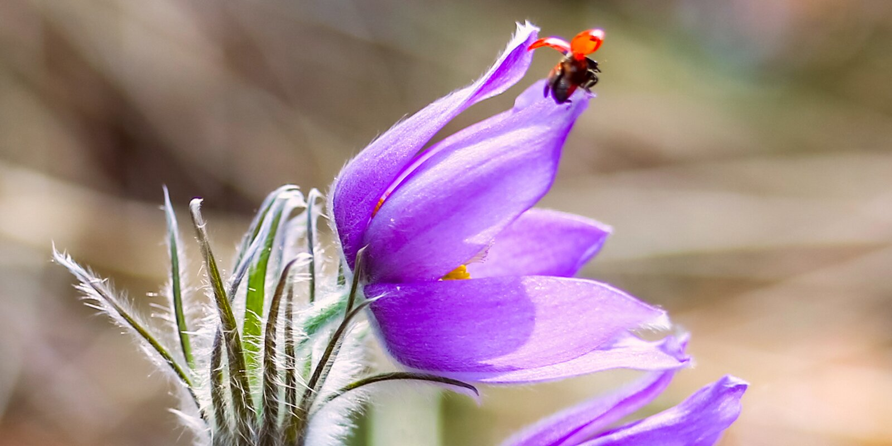
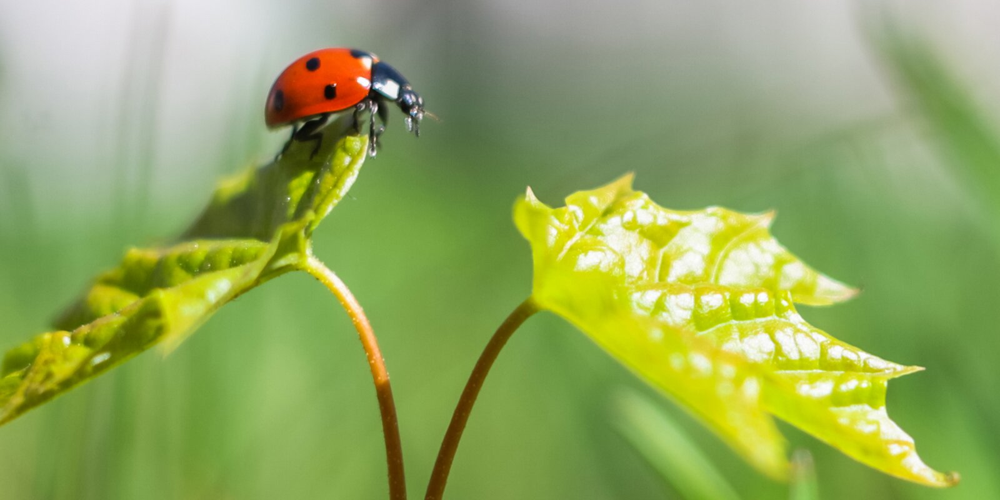
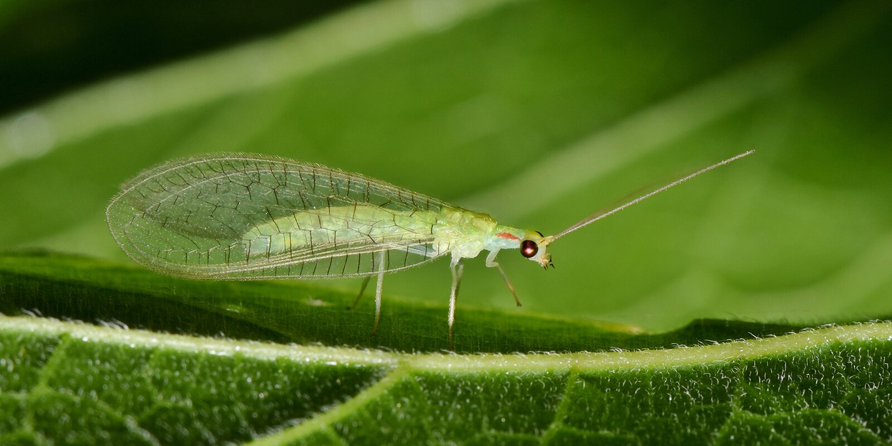
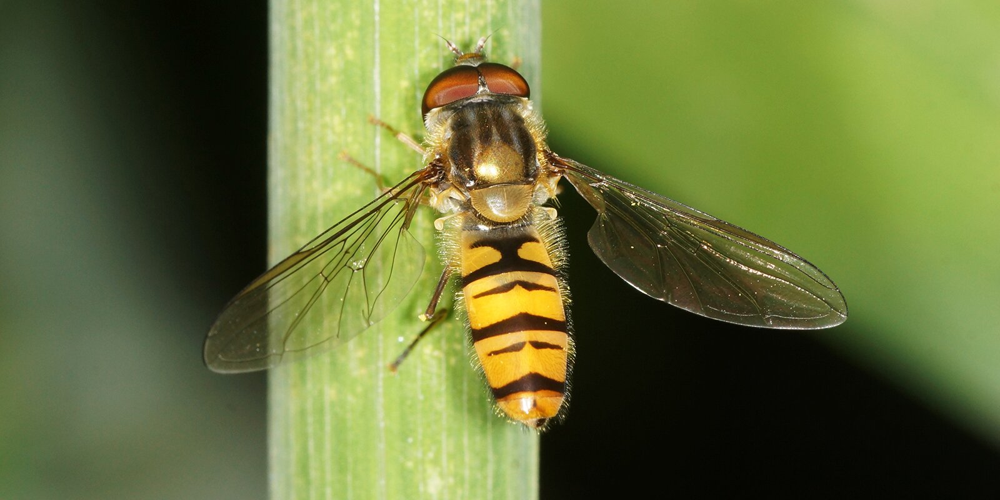
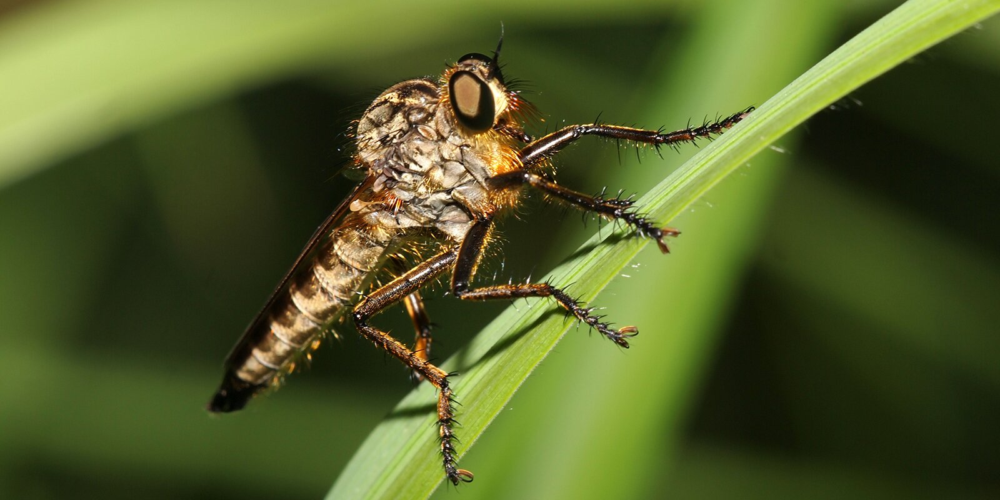

Божья коровка, ктырь и златоглазка: какие насекомые помогают избавиться от вредителей
В некоторых природных парках устанавливают специальные домики для зимовки насекомых.
Москва — один из самых зеленых мегаполисов мира. Парки, скверы и природные территории занимают почти половину площади столицы. Ежегодно количество lеревьев и кустарников увеличивается. Ярких красок в неповторимый образ города добавляют цветы.
За состоянием зеленых насаждений следят специалисты комплекса городского хозяйства, среди которых есть даже энтомологи. Они выявляют очаги вредителей, нарушающих декоративность растений, и полезных насекомых, которые помогают сохранить многообразие городской флоры.
Какие из них приносят пользу зеленым насаждениям, и стоит ли их бояться людям, рассказала Елена Семенова, энтомолог ГБУ «Автомобильные дороги».
Божья коровка: истребитель тли
Божьи коровки — самые полезные насекомые. Их ценят не только в Москве, но и во всем мире. Эти безобидные на первый взгляд жучки считаются главными истребителями вредоносной тли.
«Божью коровку невозможно спутать ни с каким другим насекомым: черные точки на красной спинке сразу бросаются в глаза. При этом мало кто знает, что их разновидностей довольно много. Они бывают белыми, черными, желтыми, а также с разным количеством точек: от двух до 14. Всего существует около восьми тысяч видов божьих коровок. В Москве чаще всего встречаются жучки с семью точками на ярко-красном панцире», — рассказывает Елена Семенова.Классификация
- Adalia — с видом Двухточечная коровка (Adalia bipunctata)
- Coccinellatypus
- Coccinula
- Harmonia
- Hippodamia
- Propylea
- Psyllobora
- Rhyzobius
- Scymnus
- Tytthaspis
Почти все представители этой группы насекомых — хищники. Они поедают не только тлю, но и щитовок, пилильщиков, листоблошек и клещей.
«Вредители бывают разные: листогрызущие, сосущие, стволовые. Они являются переносчиками болезней, вызывающих гибель деревьев. Главная задача энтомологов — предотвратить это. В этом нам помогают божьи коровки и другие хищники, которые естественным образом снижают численность вредоносных насекомых», — говорит Елена.
Особой прожорливостью отличаются личинки божьих коровок. За сутки одна особь съедает от 70 до 300 тлей, помогая избавить от них все типы городских насаждений: от кустарников во дворах до лесопарковых территорий.
У взрослых жучков довольно мощные челюсти. Они даже могут укусить человека, но это совершенно не опасно. На коже не останется никаких повреждений, только будет ощущаться легкое пощипывание.
Златоглазка: изящный хищник
Это очень изящные насекомые из семейства сетчатокрылых размером один-два сантиметра. Златоглазку легко узнать по прозрачным крыльям. Свое название она получила за блестящие глаза золотистого цвета. Чаще всего встречаются латоглазки нежно-зеленого цвета. Внешне они немного напоминают бабочек.
«Златоглазки приносят огромную пользу деревьям и кустарникам в скверах и парках, защищая их от тли, листоблошек и гусениц, которые скручивают и пожирают листья. Причем на вредителей охотятся только личинки, а взрослые насекомые питаются пыльцой и нектаром растений. Но даже за короткое время своего существования личинка успевает принести неоценимую пользу городу, истребляя до тысячи тлей в сутки», — говорит энтомолог.В ночное время взрослые златоглазки ориентируются на свет, поэтому их часто можно заметить на окнах. Иногда они залетают в квартиры и замирают на стенах или светильниках.
Их не стоит бояться: златоглазки совершенно безвредны для человека. Они могут укусить, но не станут нападать без необходимости. Причем это доставит всего лишь легкое неприятное ощущение, несравнимое с укусом комара или осы.
Муха-журчалка: почти как оса
Муха-журчалка — одно из самых удивительных насекомых, встречающихся в Москве. Из-за черно-желтого окраса ее легко спутать с осой, но, если присмотреться, можно разглядеть массу различий.
По словам энтомолога, у журчалки всего два крыла в отличие от четырехкрылой осы и нет ядовитого жала. Но особенно сильно журчалки отличаются от ос поведением — эти насекомые часто зависают в воздухе, защищая свою территорию. При этом они издают характерный журчащий звук, благодаря которому и получили свое название.
Журчалку еще называют мухой-цветочницей или помощницей пчелы, потому что она помогает опылять растения, собирая нектар и пыльцу с помощью своего хоботка.
Пользу приносят не только взрослые мухи, но и их личинки. Они живут в кронах деревьев, питаясь вредными для растений насекомыми.
Ктырь: муха-разбойница
Еще одна муха, приносящая пользу городу, — ктырь. Этот хищник обладает жестким хоботком и ядовитыми железами, которые позволяют быстро обезвредить свою жертву.
«Это одно из самых агрессивных насекомых. Из-за молниеносной реакции и прожорливости его прозвали мухой-разбойницей. Ктырь охотится практически на всех вредителей и способен прокусить даже очень твердые панцири. Он ведет себя очень агрессивно даже по отношению к таким хорошо вооруженным насекомым, как осы, пчелы или шершни», — говорит Елена Семенова.Личинки ктыря — не менее опасные охотники. Именно они приносят наибольшую пользу человеку. Личинки живут в почве, питаясь вредителями, которые повреждают корни растений. Среди них проволочник, жук-щелкун и гусеницы.
Для человека укус ктыря схож с укусом пчелы. Он может быть очень болезненным, вызывать зуд, жжение и отек. Поэтому этих насекомых желательно избегать, но ни в коем случае не нужно их убивать — они очень ценны и даже занесены в Красную книгу.
Обследование зеленых насаждений
Энтомологи ГБУ «Автомобильные дороги» проводят обследования зеленых территорий с апреля по сентябрь, в период вегетации растений. За прошедший летний сезон они обследовали около 200 объектов. Это территории вдоль трасс, магистралей, на развязках МКАД, а также скверы и некоторые крупные парки.
«Если в результате мониторинга обнаруживаются очаги вредителей, мы сообщаем специалистам, которые занимаются уходом за растениями, о необходимости провести обработку специальными препаратами. При этом используются безопасные биологические cредства, которые воздействует на определенные виды насекомых, не подвергая опасности полезных хищников. Если количество вредителей незначительное, то применяется механический способ борьбы», — отмечает Елена Семенова.По словам энтомолога, из-за благоприятной экологической обстановки в Москве достаточно много полезных насекомых. Кроме того, в городе проводятся специальные мероприятия для того, чтобы повысить их популяцию. Например, на зиму почву цветников укрывают щепой, что позволяет насекомым комфортнее пережить период холодов.
А в некоторых природных парках устанавливают специальные домики для зимовки насекомых. Внешне они напоминают скворечники, но без передней стенки. Внутреннее пространство домиков заполняют сухими полыми стеблями крапивы, конского щавеля, сахалинской гречихи, укладывают веточки деревьев и шишки. В таких «гостиницах» обычно селятся пчелы осмии, опыляющие растения энтомофильной группы, полезные жуки и божьи коровки.